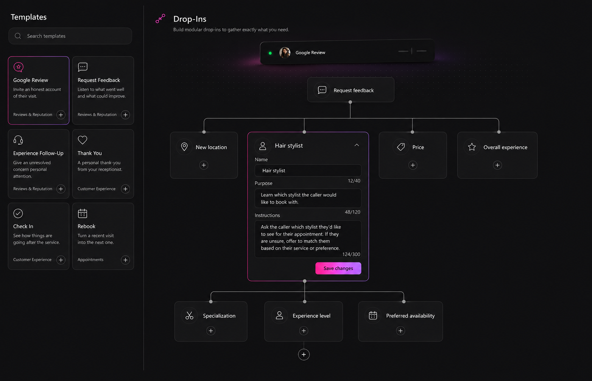
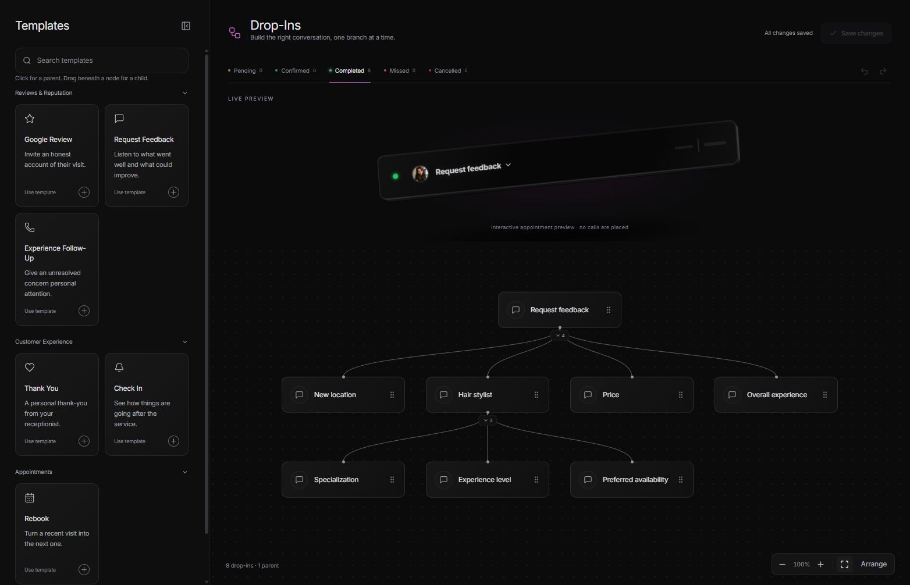
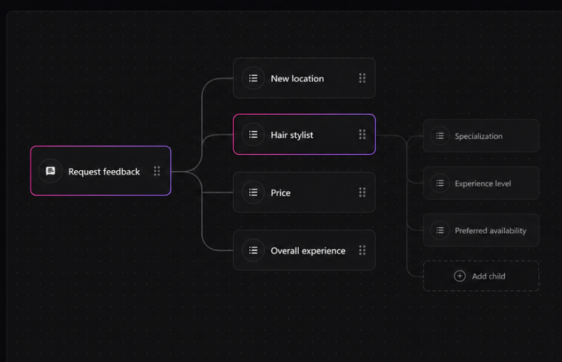
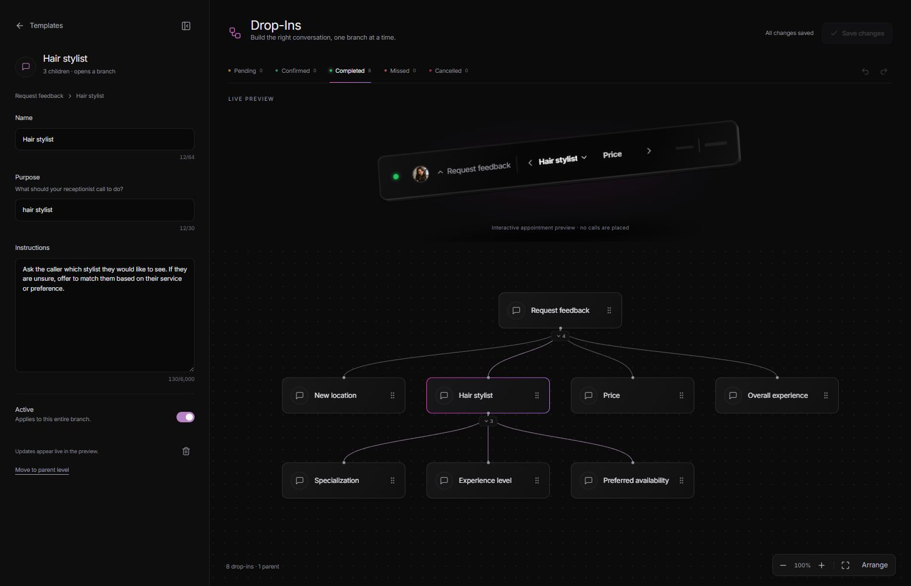

Selected concept → implemented page (later compact-node / left editor correction applied)
Selected concept · 1564 × 1006
Page · 1564 × 1006
Compact node reference · horizontal source
Selected node · fields moved to the left panel